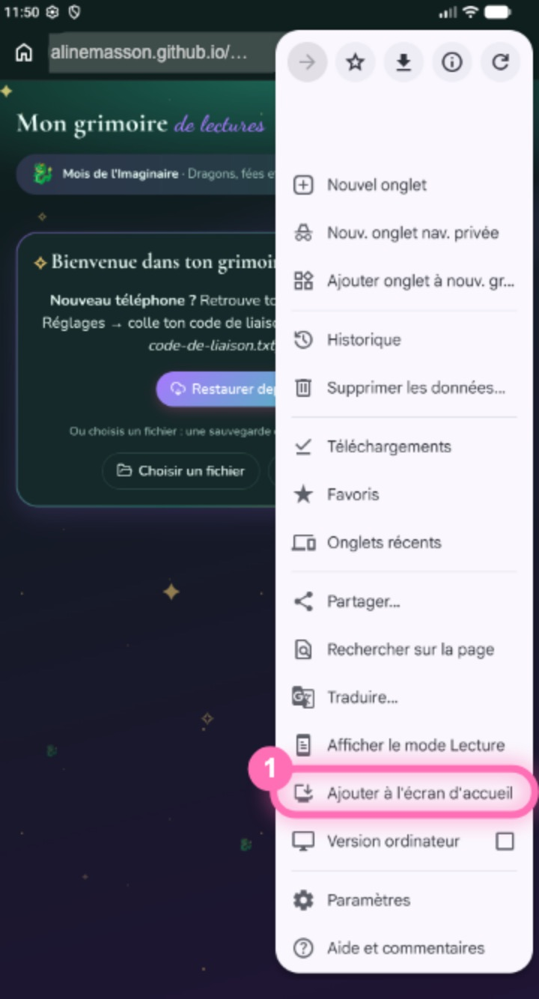
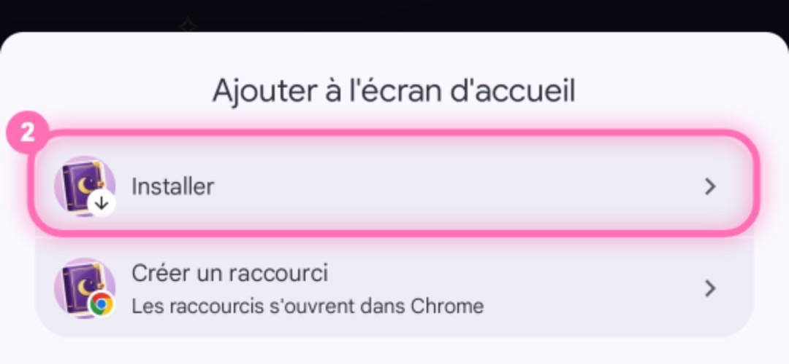
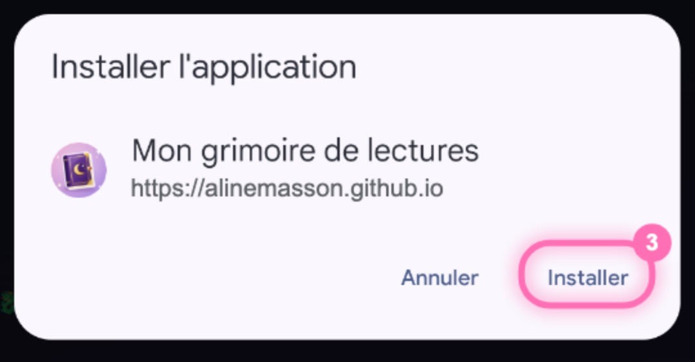
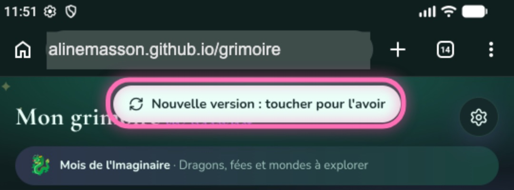
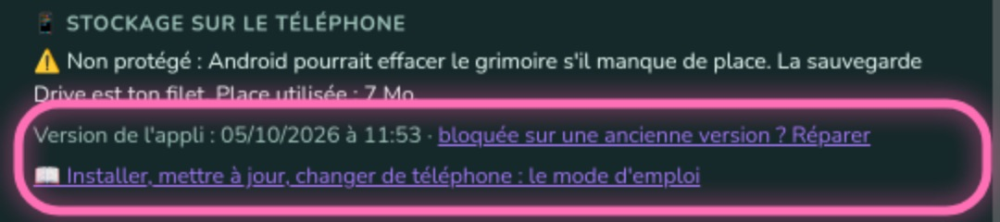
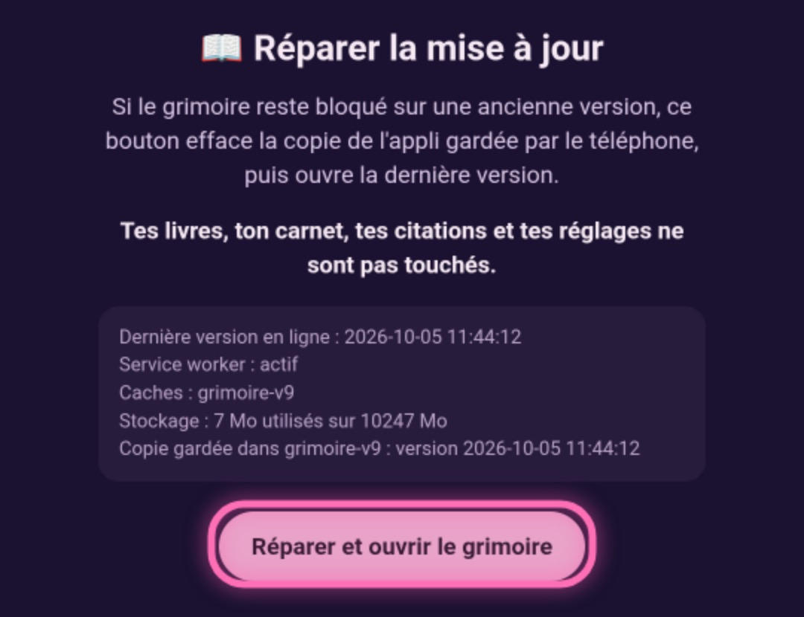

Le mode d'emploi du grimoire
Installer l'appli, la garder à jour, sauvegarder tes lectures et changer de téléphone.
1. Installer l'appli
Le grimoire s'installe depuis le navigateur, sans passer par un store. Son adresse : alinemasson.github.io/grimoire
Sur Android, avec Chrome
- Ouvre Chrome et va à l'adresse
alinemasson.github.io/grimoire. - Touche le menu ⋮ en haut à droite, puis Ajouter à l'écran d'accueil.

- Choisis Installer, et pas « Créer un raccourci ».

- Confirme avec Installer.

L'icône du grimoire apparaît sur ton écran d'accueil. L'appli s'ouvre en plein écran et marche aussi sans connexion.
Sur un Samsung, le plus simple est de passer par Chrome, même si Samsung Internet est ton navigateur habituel.
Sur iPhone, avec Safari
- Ouvre Safari et va à l'adresse
alinemasson.github.io/grimoire. - Touche le bouton Partager (le carré avec une flèche vers le haut).
- Choisis Sur l'écran d'accueil, puis Ajouter.
Sur iPhone, l'appli n'a pas encore été testée. Le scan des codes-barres n'y marche pas (tape l'ISBN à la place), le téléphone ne vibre pas pendant les animations de victoire, et on ne peut pas partager un fichier vers l'appli : utilise Importer un fichier dans ⚙️ Réglages.
2. Le premier lancement
À la première ouverture, le grimoire est vide et propose trois choix :
- Commencer à zéro : touche ensuite « + » pour ajouter ton premier livre, en scannant son code-barres, en le cherchant par son titre ou en le saisissant à la main.
- Choisir un fichier : reprends une sauvegarde du grimoire (un fichier
.zip, voir Sauvegarder). - Restaurer depuis mon Drive : seulement si tu as un code de liaison pour la sauvegarde Drive (voir plus bas).
3. Les mises à jour
Tu n'as rien à faire : quand une nouvelle version est en ligne, l'appli se recharge toute seule au moment où tu reviens dedans.
Si tu étais en train de faire quelque chose (une fiche ouverte, le minuteur…), elle attend et affiche ce bouton en haut. Touche-le quand tu veux.

Vérifier sa version
Ouvre ⚙️ Réglages et descends tout en bas : la date et l'heure de ta version sont écrites là.

À ne pas confondre : sous le titre de l'accueil, « ☁️ sauvegardé à 9 h 21 » est l'heure de ta dernière sauvegarde Drive, pas la version.
Si l'appli reste sur une ancienne version
- Ferme complètement l'appli (balaie-la depuis les applis récentes) et rouvre-la.
- Si elle n'est toujours pas à jour : dans ⚙️ Réglages, touche Réparer (à côté de la version). Si l'appli ne s'ouvre plus, va dans Chrome à l'adresse
alinemasson.github.io/grimoire/reparer.html. - Touche Réparer et ouvrir le grimoire.

La réparation efface seulement la copie de l'appli gardée par le téléphone. Tes livres, ton carnet, tes citations et tes réglages ne sont pas touchés.
L'icône ne change pas
Quand l'icône du grimoire change, Chrome met à jour celle de ton écran d'accueil tout seul, mais ça peut prendre jusqu'à un jour. Il peut aussi te demander de confirmer la nouvelle icône : accepte.
Si ton icône a un petit logo Chrome dans un coin, c'est un raccourci : il ne changera jamais. Supprime ce raccourci (ça n'enlève que l'icône, pas tes lectures), puis installe l'appli comme expliqué plus haut.
4. Sauvegarder
Tes lectures sont enregistrées sur ton téléphone. Garde-en une copie ailleurs, au cas où le téléphone serait perdu ou effacé.
Une sauvegarde en fichier
- ⚙️ Réglages → 💾 Fichier → Exporter.
- Le téléphone propose de partager le fichier
.zip(ou le télécharge) : range-le dans ton Drive, envoie-le-toi par mail, etc.
Ce fichier contient tout : livres, lectures, carnet, citations et leurs photos. Refais-en un de temps en temps.
La sauvegarde automatique dans le Drive
Elle envoie une copie dans un dossier du Drive, 30 secondes après chaque modification. Elle demande un code de liaison personnel, à coller dans ⚙️ Réglages → ☁️ Sauvegarde dans ton Drive. Sans code de liaison, utilise la sauvegarde en fichier.
5. Changer de téléphone
- Sur le nouveau téléphone, installe l'appli (voir Installer).
- Au premier lancement :
- avec la sauvegarde Drive : touche Restaurer depuis mon Drive, colle ton code de liaison, touche Relier puis Restaurer, et choisis la copie la plus récente ;
- avec un fichier : touche Choisir un fichier et prends ta dernière sauvegarde
.zip.
6. Bon à savoir
- Tes données restent chez toi : livres, carnet et citations ne quittent le téléphone que pour ta sauvegarde Drive, si tu l'as reliée. L'appli va seulement chercher en ligne les informations et les couvertures des livres.
- Ne vide pas les données de Chrome pour ce site (Paramètres → Confidentialité, ou Paramètres des sites) : ça effacerait le grimoire. Fais d'abord une sauvegarde.
- Stockage protégé : en bas de ⚙️ Réglages, « ✅ Protégé » veut dire qu'Android n'effacera pas le grimoire tout seul s'il manque de place.
- Hors connexion, tout marche, sauf ce qui va chercher en ligne : la recherche d'un livre, les couvertures jamais affichées, et la sauvegarde Drive (elle repart à la prochaine ouverture de l'appli avec une connexion).